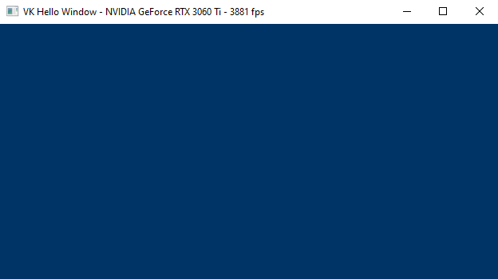

2 - GUI applications
In order to develop graphics applications, it is necessary to create a window for rendering. However, before proceeding, it is required to have a basic understanding of how applications with a graphical user interface (GUI) operate on both Windows and Linux.
2.1 - Windows applications
The content of this section has been heavily inspired by "Programming Microsoft Visual C++, Fifth Edition" by David J. Kruglinski, George Shepherd and Scott Wingo.

Windows applications use an event-driven programming model (illustrated in the following image) in which programs respond to events by processing messages sent by the operating system. In this context, an event is a keystroke, a mouse click, or a command for a window to repaint itself. The entry point of a Windows application is a function called WinMain, but most of the action takes place in a function known as the window procedure. The window procedure processes messages sent by the OS to the application a window belongs to. WinMain creates that window and then enters a message loop, retrieving messages and dispatching them to the window procedure. Messages wait in a message queue until they are retrieved. The main occupation of a Windows application is to respond to the messages it receives, and in between messages, it does little except wait for the next message to arrive. You exit the message loop when a WM_QUIT message is retrieved from the message queue, signaling that the application is about to end. This message is sent by the OS when the user closes the window. When the message loop ends, WinMain returns, and the application terminates.
Observe that window messages can also be directly sent to a window procedure, bypassing the message queue. If the sending thread is sending a message to a window created by the same thread, the specified window’s window procedure is called. However, if a thread is sending a message to a window created by another thread, things become more complicated. Fortunately, we don’t need to know the low-level details right now.
2.1.1 - Window Procedure
As stated earlier, a window procedure is a function that receives and processes messages sent by the OS to the application a window belongs to. A window class defines important characteristics of a window such as its window procedure address, its default background color, and its icon. Every window created with a particular class will use that same window procedure to respond to messages.
When the application dispatches a message to a window procedure, it also passes additional information on the message as arguments in its input parameters. That way, the window procedure can perform an appropriate action for a message by consuming the related message data. If a window procedure does not process a message, it must send the message back to the system for default processing by calling the DefWindowProc function, which performs a default action and returns a message result. The window procedure must then return this value as its own message result.
Since a window procedure is shared by all windows belonging to the same class, it can process messages for different windows. To identify the specific window a message is addressed to, a window procedure can examine the window handle passed as input parameter. The code provided in the window procedure to process a particular message is known as message handler.
2.1.2 - Messages
Windows defines many different message types. Usually, messages have names that begin with the letters “WM_”, as in WM_CREATE and WM_PAINT. The following table shows ten of the most common messages. For example, a window receives a WM_PAINT message when its interior needs repainting. You can think of a Windows program as a collection of message handlers.
| Message | Sent when |
|---|---|
WM_CHAR |
A character is input from the keyboard. |
WM_COMMAND |
The user selects a menu item, or a control sends a notification to its parent. |
WM_CREATE |
A window is created. |
WM_DESTROY |
A window is destroyed. |
WM_LBUTTONDOWN |
The left mouse button is pressed. |
WM_LBUTTONUP |
The left mouse button is released. |
WM_MOUSEMOVE |
The mouse pointer is moved. |
WM_PAINT |
A window needs repainting. |
WM_QUIT |
The application is about to terminate. |
WM_SIZE |
A window is resized. |
When the message loop dispatches a message, the window procedure is called, and you can retrieve the information on the message from its four input parameters:
-
The handle of the window to which the message is directed,
-
A message ID, and
-
Two 32-bit parameters known as wParam and lParam.
The window handle is a 32-bit value that uniquely identifies a window. Internally, the value references a data structure in which the OS stores relevant information about the window such as its size, style, and location on the screen.
The message ID is a numeric value that identifies the message type: WM_CREATE, WM_PAINT, and so on.
wParam and lParam contain information specific to the message type. For example, when a WM_LBUTTONDOWN message arrives, wParam holds a series of bit flags identifying the state of the Ctrl and Shift keys and of the mouse buttons. lParam holds two 16-bit values identifying the location of the mouse pointer (in screen coordinates) when the click occurred. At that point, you have all you need to know to process the WM_LBUTTONDOWN message in the window procedure. Conventionally, WinMain should return the value stored in the wParam of the WM_QUIT message.
The only criticism to the above explanation is that a graphics application performs the bulk of its processing exactly in between messages. Although, the sample we will examine in this tutorial is an exception as its only purpose is to show a window on the screen (i.e., no relevant graphics operations are involved).
2.1.3 - How to create a window
The following listing demonstrates how to create and show a window on the screen.
#include <windows.h>
int WINAPI WinMain(HINSTANCE hInstance, HINSTANCE, char*, int nCmdShow)
{
ApplicationClass* pApp();
uint32_t width = 1280;
uint32_t height = 1280;
WNDCLASSEX windowClass = { 0 }; // A WindowClass is needed
windowClass.cbSize = sizeof(WNDCLASSEX);
windowClass.style = CS_HREDRAW | CS_VREDRAW;
windowClass.lpfnWndProc = WindowProc;
windowClass.hInstance = (HINSTANCE)hInstance;
windowClass.hCursor = ::LoadCursor(NULL, IDC_ARROW);
windowClass.lpszClassName = "ClassName";
::RegisterClassEx(&windowClass);
RECT windowRect = { 0, 0, width, height };
::AdjustWindowRect(&windowRect, WS_OVERLAPPEDWINDOW, FALSE);
winParams.hWindow = ::CreateWindow( // Create the window and store a handle to it.
windowClass.lpszClassName,
"Window name",
WS_OVERLAPPEDWINDOW,
CW_USEDEFAULT,
CW_USEDEFAULT,
windowRect.right - windowRect.left,
windowRect.bottom - windowRect.top,
nullptr, // We have no parent window.
nullptr, // We aren't using menus.
(HINSTANCE)hInstance,
pApp);
ShowWindow(winParams.hWindow, nCmdShow);
return ApplicationClass::MessageLoop(); // Enter the message loop
}
To create a window, we first need an instance of a window class (structure WNDCLASSEX) to specify some basic information about all the windows created using that instance. Below is a list of the most important fields of WNDCLASSEX.
-
style:- specifies some additional information about the window.CS_HREDRAW | CS_VREDRAWindicates to redraw the entire window if a size adjustment changes the width and\or height of the client area.
-
hCursor:- specifies the cursor showed when this is over the window’s client area.
-
hInstance:- specifies the application a window belongs to. This information is passed as an argument to the first parameter ofWinMain.
-
lpszClassName:- specifies the name we want to give to the window class.
-
lpfnWndProc:- specifies the address of the window procedure.
-
RegisterClassEx:- registers the window class so that we can use an instance of this class to create one or more windows with a specific style, window procedure, etc.
-
CreateWindow:- as the name suggests, creates a window and returns its handle. It takes the name of a window class and some additional information. In particular, it needs the size of the entire window, so we must calculate it because in graphics application we tipically set the size of the window's client area where we want to draw rather than the size of the whole window area. The client area of a window is where we are allowed to draw.

AdjustWindowRect returns such information if you pass the size of the client area and the style of the window you’re going to create with CreateWindow. WS_OVERLAPPEDWINDOW specifies a window with a title bar and no menu.
With the last parameter of CreateWindow we can specify a pointer the OS will return to us in response to a WM_CREATE message (sent by the OS to an application as soon as a window is created; that is, when CreateWindow returns). We will use this last parameter to save an instance of the application class with the purpose to access it later. The following listing shows an example of a window procedure.
// Main message handler for the application.
LRESULT CALLBACK WindowProc(HWND hWnd, UINT message, WPARAM wParam, LPARAM lParam) {
ApplicationClass* pApp = reinterpret_cast<ApplicationClass*>(GetWindowLongPtr(hWnd, GWLP_USERDATA));
switch (message) {
case WM_CREATE: {
// Save the ApplicationClass pointer passed in to CreateWindow.
LPCREATESTRUCT pCreateStruct = reinterpret_cast<LPCREATESTRUCT>(lParam);
SetWindowLongPtr(hWnd, GWLP_USERDATA, reinterpret_cast<LONG_PTR>(pCreateStruct->lpCreateParams));
}
return 0;
case WM_PAINT:
if (pApp && pApp->IsInitialized()) {
pApp->OnUpdate();
pApp->OnRender();
}
return 0;
case WM_KEYDOWN:
switch (wParam) {
case VK_ESCAPE:
PostQuitMessage(0);
break;
}
if (pApp) {
pApp->OnKeyDown(static_cast<UINT8>(wParam));
}
return 0;
case WM_KEYUP:
if (pApp) {
pApp->OnKeyUp(static_cast<UINT8>(wParam));
}
return 0;
case WM_DESTROY:
PostQuitMessage(0);
return 0;
}
// Handle any messages the switch statement didn't.
return DefWindowProc(hWnd, message, wParam, lParam);
}
Before returning, CreateWindow sends a WM_CREATE message to the window procedure. In the WM_CREATE message handler, lParam is a pointer to CREATESTRUCT. The lpCreateParams field of this structure contains the last parameter passed to CreateWindow. This means we can call SetWindowLongPtr to save the instance of the application class in the user data associated with the window (an extra memory space reserved to the user), and retrieve it with GetWindowLongPtr later.
A WM_DESTROY is sent to the window procedure of the window being destroyed after the user closes it. The WM_DESTROY message handler calls PostQuitMessage, which queues a WM_QUIT message. That way, we can exit the message loop (more on this shortly).
Generally, WM_PAINT messages are both sent to the window procedure, and posted to the message queue throughout the application’s lifetime. That way, we can use the WM_PAINT message handler for updating and rendering purposes.
At the end of WinMain we call MessageLoop, and the application enters a message loop where PeekMessage retrieves a message from the message queue, and save the related information in the MSG structure passed in the first parameter before returning TRUE (otherwise it returns FALSE to indicate no message were available). DispatchMessage dispatches a message to the window procedure. TranslateMessage translates virtual-key messages (WM_KEYDOWN, WM_KEYUP) into character messages (WM_CHAR) containing ASCII characters. That way you can better distinguish the various keys of the keyboard.
int ApplicationClass::MessageLoop()
{
MSG msg;
bool quitMessageReceived = false;
while (!quitMessageReceived)
{
if (::PeekMessage(&msg, NULL, 0, 0, PM_REMOVE)) {
::TranslateMessage(&msg);
::DispatchMessage(&msg);
if (msg.message == WM_QUIT) {
quitMessageReceived = true;
break;
}
}
}
// Return this part of the WM_QUIT message to Windows.
return static_cast<char>(msg.wParam);
}
2.2 - Linux applications
The content of this section has been heavily inspired by "Xlib Programming Manual, for version 11" by Adrian Nye, as well as additional information gathered from Wikipedia and other online resources.
On linux we have different kernel versions, display servers, windows managers, communication protocols, and protocol client libraries. In this section, I will just explain the necessary requirements for creating a window using the Xlib library, which is easier and cleaner to use for our purposes (while I am aware that Xlib has some limitations and drawbacks, they are not significant within the scope of this tutorial series, which is solely intended to provide guidance on programming with the Vulkan API).
2.2.1 - X Window System
The X Window System (X11, or simply X) is a windowing system based on a client-server model that provides basic GUI support for creating and moving windows on the display device, and interacting with a mouse and keyboard. It also supports basic drawing of graphical primitives. This model has a main X server providing a display service that clients can interact with, even over a network. This means the server and its clients need to communicate via a network-transparent protocol. For this purpose, the X protocol makes the network transparent, so that the server and its clients may run on the same machine or different ones (including across various architectures and operating systems).

The X Window System mainly defines a protocol (called X protocol) and some graphics primitives. It contains no specification for application user-interface design, such as button, menu, or window title-bar styles. Rather, the responsibility of defining and supplying these details falls on application software such as window managers, GUI widget toolkits and desktop environments, or application-specific graphical user interfaces. As a result, there is no typical X interface, and several different desktop environments have become popular among users.
The X Window System uses certain terms in a specific manner that sometimes can diverge from their common usage - particularly "display" and "screen". The following is a subset of the common used terms, presented for convenience:
device: A graphics device such as a computer graphics card or a computer motherboard's integrated graphics chipset.
monitor: A physical device such as a CRT or a flat screen computer display.
screen: An area into which graphics may be rendered, either into system memory or within a graphics device.
display: A collection of screens, even involving multiple monitors, generally configured to allow the mouse to move the pointer to any position within them.
2.2.2 - Xlib
Xlib (also known as libX11) is an X Window System protocol client library written in C language. It contains functions for interacting with an X server. These functions allow programmers to write applications without knowing the details of the X protocol: Xlib calls are automatically translated to X protocol requests sent to the server.

In the context of the X Window System, a window manager is a special type of X client that controls the placement and appearance of windows to help provide them a desktop environment. It typically decorate the windows with a title bar and various tools for iconifying and resizing applications. Much of the communication between clients and the window manager (and vice versa) occurs through properties (the rest occurring through events). Many of the properties are known as hints because they may not necessarily be honored by the window manager.
The Xlib functions that send requests to the server, typically do not immediately do it. Instead, they store the requests in a buffer referred to as the request buffer. The request buffer may contain a variety of requests to the server, not only those that have a visible effect on the screen. The request buffer is guaranteed to be flushed (which means that all pending requests are transmitted to the server) after a call to either the XSync or XFlush functions, after a function call that returns a value from the server (these functions block until a response is received), or under certain conditions.
For each application, the X server provides a queue where it stores events that are generated for any of the application's windows. These events are dispatched by the X server asynchronously in the appropriate queue. Events include user input (key press, mouse click and movements over a window, or window resizing) as well as interaction with other programs (for example, if an obscured portion of a window is exposed when another overlapping window is moved, closed, or resized, the client must redraw it).
Client applications can inspect and retrieve events from the event queue by calling specific Xlib functions. Some of these functions may block, in which case they also flush the request buffer. Errors are instead received and treated asynchronously: applications can provide an error handler that will be called whenever an error message from the server is received.
The content of a window is not guaranteed to be preserved if the window or part of it is made not visible. If this occurs, the application is sent an Expose event when the invisible region of the window is made visible again. The aplication is then supposed to draw the window content again.
The functions in the Xlib library can be grouped in:
-
connection operations (XOpenDisplay, XCloseDisplay, ...)
-
requests to the server, including requests for operations (XCreateWindow, XSetWindowProperty, ...) and requests for information (XGetWindowProperty, ...)
-
operations that are local to the client: operations on the event queue (XNextEvent, XPeekEvent, ...) and other operations on local data (XLookupKeysym, XParseGeometry, XSetRegion, XCreateImage, XSaveContext, ...)
In Xlib, the primary data types include the 'Display' structure and several identifiers.
The Display structure of the Xlib library not only provides information about the display, but also contains significant details regarding the communication channel between the client and the server. On Unix-like operating systems, this structure includes the file handle of the socket of this channel. Most Xlib functions require a Display structure as an argument because they either operate on the channel or are relative to a specific channel. In particular, all Xlib functions that interact with the server need this structure for accessing the channel. Some other functions need this structure, even if they operate locally, as they operate on data relative to a specific channel. Operations of this kind include for example operations on the event queue.
Windows, colormaps, and other similar objects are managed by the server, which means that the implementation details are all stored in the server. The client can only interact with these objects through their identifiers. It is not possible for the client to directly manipulate an object, but it can request the server to perform operations on the object by specifying its identifier.
A colormap is a lookup table used to map pixel values from a frame buffer (a memory buffer containing data representing all the pixels in a complete video frame) to pixel colors at the corresponding location on the screen.

The types Windows, Pixmap, Font, Colormap, etc. are all identifiers, which are 32-bit integers. To create a window, a client sends a request to the server via an Xlib function call. The server responds with a unique identifier for the new window. The client can then use this identifier to perform additional operations on the same window, such as resizing or moving it.
Every window has a predefined set of attributes and a set of properties, all stored in the X server and accessible to the clients via appropriate requests. Attributes are data about the appearance and response of a window, such as its size, position, background color, which event types are received, etc. Properties are pieces of data that are attached to a window.
You can think of properties as global variables associated with a particular window and made available to all clients running under a server. Properties are used by clients to store information that other clients, including the window manager, might need or want to know.
Properties have a string name and a numerical identifier called atom. An atom is an ID that uniquely identifies a particular property where clients can store arbitrary data, usually to inform the window manager about its preferences. For example, the WM_NAME property is used to store the name of a window, which is typically displayed by the window manager at the top of the window. Therefore, a client can use the atom corresponding to WM_NAME to set a string that the window manager will read to set the window title.
Property name strings are typically all upper case, with words separated by underscores, such as WM_COLORMAP_WINDOWS. Atoms are used to refer to properties in function calls. This avoid the need to send arbitrary-length property name strings over the network, that it's easier and reduce network traffic. An application gets the atom for a property by calling XInternAtom. You can specify the string name for a property as an argument to XInternAtom, and it returns the atom. From this point on, the application can use the atom to refer to that property.
Some atoms, called predefined atoms, are defined when the server initializes. These atoms are available as symbolic constants starting with XA_ and can be used directly by applications without the need to call the XInternAtom function.
XSetStandardProperties and XSetWMProperties can be used to give the window manager some information about your window's preferences. In particular, these functions can set some essential window properties that are required for a typical application. For example, the window title (WM_NAME property), the icon, and the size hints for the window in its normal state.
The WM_PROTOCOLS property is used to enable applications to receive notifications of specific events or conditions. It contains a list of atoms (that is, it is a property that can refer to other properties through its atoms), each identifying a protocol that represent a condition the application want to be notified with a ClientMessage event. By registering for a protocol, an application can indicate that it is capable of handling certain events, such as window close or iconify requests, from the window manager. The xclient field of the event will contain the atoms for both the WM_PROTOCOLS property and one of the properties listed below
- WM_TAKE_FOCUS: Assignment of keyboard focus.
- WM_SAVE_YOURSELF: Save client state warning.
- WM_DELETE_WINDOW: Request to delete top−level window.
The NET_WM_STATE property is also a list of atoms, each describing a specific window state although. For example, NET_WM_STATE_FULLSCREEN is the property that correspond to an atom included in NET_WM_STATE that specify a window in full screen.
Unlike properties, window attributes are defined in regular structures. In particular, the XWindowAttributes and XSetWindowAttributes structures include information about about how a window is to look and act. The window attributes defined in XSetWindowAttributes can be set by calling XChangeWindowAttributes. On the other hand, XWindowAttributes is a read-only structure, and to change the window attributes associated to its field we need to using specific Xlib functions. For example, the window position can be set by calling XMoveWindow that inform the window manager how to move a top-level window. In the same way, the functions to resize a top-level window are XMoveWindow, XMoveResizeWindow, and XResizeWindow, while the function to change the border width of a window is XSetWindowBorderWidth.
However, it is not essential that you set any window attributes other than the window background and border. Therefore, if you need more information, refer to the Xlib documentation.
If you want to set the position of a window, remember that you need to distinguish between the coordinate system of the parent window, and the coordinate system of the root window (the screen). Fortunately, XTranslateCoordinates allows to translate coordinates in one window to the coordinate space of another window (more on this shortly).
2.2.3 - How to create a window
The following listing demonstrates how to create and show a window on the screen using the Xlib library.
#include <X11/Xlib.h>
#include <X11/Xutil.h>
#include <X11/Xatom.h>
Display* pDisplay = nullptr;
Atom wm_delete_window = 0;
bool quit = false;
int main(const int argc, const char* argv[])
{
ApplicationClass* pApp();
// Size of the client area
uint32_t width = 1280;
uint32_t height = 720;
// Check if DISPLAY is set as an environment variable, and stores a valid value.
const char *display_envar = getenv("DISPLAY");
if (display_envar == nullptr || display_envar[0] == '\0') {
printf("Environment variable DISPLAY requires a valid value.\nExiting ...\n");
fflush(stdout);
exit(1);
}
// Open a connection to the X server
pDisplay = XOpenDisplay(nullptr);
// Create the window
unsigned long white = WhitePixel(pDisplay, DefaultScreen(pDisplay));
Window win = XCreateSimpleWindow(pDisplay, DefaultRootWindow(pDisplay), 0, 0, width, height, 0, white, white);
// Set the event types the window wants to be notified by the X Server.
XSelectInput(pDisplay, win, KeyPressMask | KeyReleaseMask);
// Also request to be notified when the window is deleted.
Atom wm_protocols = XInternAtom(pDisplay, "WM_PROTOCOLS", true);
wm_delete_window = XInternAtom(pDisplay, "WM_DELETE_WINDOW", true);
XSetWMProtocols(pDisplay, win, &wm_delete_window, 1);
// Set window and icon names
XSetStandardProperties(pDisplay, win, "Window name", "Icon name", None, nullptr, 0, nullptr);
// Setup the Size Hints with the minimum window size.
XSizeHints sizehints;
sizehints.flags = PMinSize;
sizehints.min_width = 640;
sizehints.min_height = 360;
// Tell the Window Manager our hints about the minimum window size.
XSetWMSizeHints(pDisplay, win, &sizehints, XA_WM_NORMAL_HINTS);
// Request to display the window on the screen, and flush the request buffer.
XMapWindow(pDisplay, win);
XFlush(pDisplay);
// Enter the event loop
return ApplicationClass::EventLoop();
}
XOpenDisplay connect the client to the X server through the channel contained in the Display structure. XOpenDisplay takes the display name as its first parameter, but you can also pass nullptr so that it defaults to the value of the DISPLAY environment variable. That's why we check if DISPLAY is set as an environment variable, and stores a valid value.
XCreateSimpleWindow creates an unmapped child window for a specified parent window, returns the window ID of the created window, and causes the X server to generate a CreateNotify event. DefaultRootWindow returns the root window (which fills the entire screen) of the default screen for the display passed as a parameter. The position coordinates are expressed relative to the parent window (in this case, the root window). WhitePixel returns the pixel value that maps to white using the default colormap for the specified screen: we use this value as the background and borded colors of the window.
Almost certainly the window manager will ignore the position coordinates passed to XCreateSimpleWindow. Therefore, if you need to create a window at a specific position, first you must translate the position of the window (passed as a parameter to XCreateSimpleWindow) to a screen position by calling XTranslateCoordinates. At that point, you can call XMoveWindow to specify a new location for the window.
XSelectInput sets the types of events the window wants to be notified by the X Server. In this case, we are interested in key press and release. We are also interested in being notified with a ClientMessage event when the window is closed. That's why we use XSetWMProtocols to set the WM_DELETE_WINDOW property through the array of atoms included in WM_PROTOCOLS.
The window name displayed in the title bar can be set by calling XSetStandardProperties, which also sets the string displayed when the client is iconified.
XSetWMSizeHints tells the window manager our hints about the look of a window. In this case we want to set a minimum size for our window, which means we need to set the WM_NORMAL_HINTS property, that maps to a XSizeHints structure. The flags field of this structure specifies the fields in the structure we are going to set.
XMapWindow maps the window. That is, it requests to display the window on the screen. XFlush flushes the request buffer.
At the end of the main function we call EventLoop, which enters the event loop.
int ApplicationClass::EventLoop()
{
// Event loop
while (!quit)
{
XEvent event;
while ((XPending(pDisplay) > 0))
{
XNextEvent(pDisplay, &event);
HandleX11Event(event);
}
if (!quit && IsInitialized())
{
OnUpdate();
OnRender();
}
}
return 0;
}
The application will continue to process events from the event queue as long as there are events pending. Once the event queue is empty, the application can perform updating and rendering operations.
XPending returns the number of events that have been received from the X server but have not been removed from the event queue. This means that when the event queue is empty, the application can move on to other tasks, such as updating an animation and rendering a new frame on the screen.
XNextEvent copies the first event from the event queue into the specified XEvent structure and then removes it from the queue. If the event queue is empty, XNextEvent flushes the request buffer and blocks until an event is received.
HandleX11Event is our event handler.
void HandleX11Event(XEvent& event)
{
ApplicationClass* pApp = VKApplication::GetApplication();
switch (event.type)
{
case ClientMessage:
if ((Atom)event.xclient.data.l[0] == wm_delete_window)
{
quit = true;
}
break;
case KeyPress:
{
switch (event.xkey.keycode)
{
case 0x9: // Escape
quit = true;
break;
}
if (pApp)
{
pApp->OnKeyDown(static_cast<uint8_t>(event.xkey.keycode));
}
}
break;
case KeyRelease:
{
if (pApp)
{
pApp->OnKeyDown(static_cast<uint8_t>(event.xkey.keycode));
}
}
break;
default:
break;
}
}
In this case, we are calling specific application functions to handle key press and release events.
Also, we check the xclient field of the event to verify that it contains the ID of the atom associated with the WM_DELETE_WINDOW property. In that case, we set quit to true in order to exit the event loop.
Observe that data is a field of xclient, and it is defined as a union of 160-bit values where l represents an array of five long (32-bit) values. Also, the type field of xclient will contain the ID of the atom associated with the WM_PROTOCOLS property.